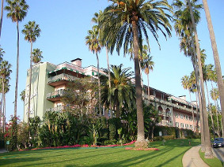

"Hotel California" is the title song from the Eagles' album of the same name and was released as a single in February 1977. It is one of the best-known songs of the album-oriented rock era. Writing credits for the song are shared by Don Felder, Don Henley, and Glenn Frey. The Eagles' original recording of the song features Henley singing the lead vocals and concludes with an extended section of electric guitar interplay between Felder and Joe Walsh. The song has been given several interpretations by fans and critics alike, but the Eagles have described it as their "interpretation of the high life in Los Angeles". In the 2013 documentary History of the Eagles, Henley said the song was about "a journey from innocence to experience...that's all".
History and recognition
"Hotel California" topped the Billboard Hot 100 singles chart for one week in May 1977 and peaked at number ten on the Adult Contemporary charts. Three months after its release, the single was certified Gold by the Recording Industry Association of America (RIAA), representing one million copies shipped. The Eagles also won the 1977 Grammy Award for Record of the Year for "Hotel California" at the 20th Grammy Awards in 1978.
In 2009, the song "Hotel California" was certified Platinum (Digital Sales Award) by the RIAA for sales of one million digital downloads.
The song is rated highly in many rock music lists and polls; Rolling Stone magazine ranked it number 49 on its list of "The 500 Greatest Songs of All Time". It is also one of The Rock and Roll Hall of Fame's 500 Songs that Shaped Rock and Roll. The song's guitar solo was voted the best solo of all time by readers of Guitarist magazine in 1998 and was ranked 8th on Guitar Magazine's Top 100 Guitar Solos.
As one of the group's most popular and well-known songs, "Hotel California" has been a concert staple for the band since its release. Performances of the song appear on the Eagles' 1980 live album, simply called Live, and in an acoustic version on the 1994 Hell Freezes Over reunion concert CD and video release. The Hell Freezes Over version is performed using eight guitars and has a decidedly Spanish feel to it, with Don Felder's flamenco-inspired arrangement and intro. During the band's Farewell 1 Tour-Live from Melbourne, the song was performed in a manner closer to the original album version, but with a trumpet interlude in the beginning.
Cover art for single
The front cover art for the 45rpm release of the song was a reworked version of the Hotel California LP cover art, which used a photograph of the Beverly Hills Hotel by David Alexander, with design and art direction by Kosh.
Interpretation
The lyrics weave a surrealistic tale in which a weary traveler checks into a luxury hotel. The hotel at first appears inviting and tempting, but it turns out to be a nightmarish place where "you can check out anytime you like, but you can never leave". The song is an allegory about hedonism, self-destruction, and greed in the music industry of the late 1970s. Don Henley called it "our interpretation of the high life in Los Angeles" and later reiterated: "It's basically a song about the dark underbelly of the American dream and about excess in America, which is something we knew a lot about." In 2008, Don Felder described the origins of the lyrics:
“ Don Henley and Glenn wrote most of the words. All of us kind of drove into L.A. at night. Nobody was from California, and if you drive into L.A. at night... you can just see this glow on the horizon of lights, and the images that start running through your head of Hollywood and all the dreams that you have, and so it was kind of about that... what we started writing the song about. Coming into L.A.... and from that 'Life in the Fast Lane' came out of it, and 'Wasted Time' and a bunch of other songs. ”
The term "colitas" in the first stanza means "little tails" in Spanish; in Mexican slang it refers to buds of the cannabis (marijuana) plant.
Personnel
- Don Henley: Lead vocals, drums, backing vocals
- Glenn Frey: 12-string acoustic guitar, backing vocals
- Don Felder: Lead guitar, 12-string electric guitar, acoustic guitar
- Joe Walsh: Lead guitar, electric guitar
- Randy Meisner: Bass guitar, backing vocals